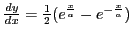
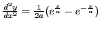
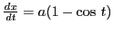
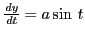
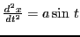
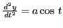
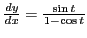
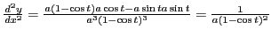
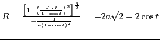

Next: Circle of curvature Up: Curvature; radius of curvature Previous: Formulas for curvature Contents Index
By analogy with the circle (see (12.1)), the radius of curvature of a curve at a point is defined as
the reciprocal of the curvature of the curve at that
point. Denoting the radius of curvature by  ,
we have12.2
,
we have12.2
Solution. ; . Substituting in (12.5),
Solution. , ; , . Substituting the previous example and then in (12.5), we get
, , and .
![$\displaystyle R = \frac{ \left[ 1 + \left( \frac{dy}{dx} \right)^2 \right]^{\frac{3}{2}} }{ \frac{d^2 y}{dx^2} }$](img3157.png)